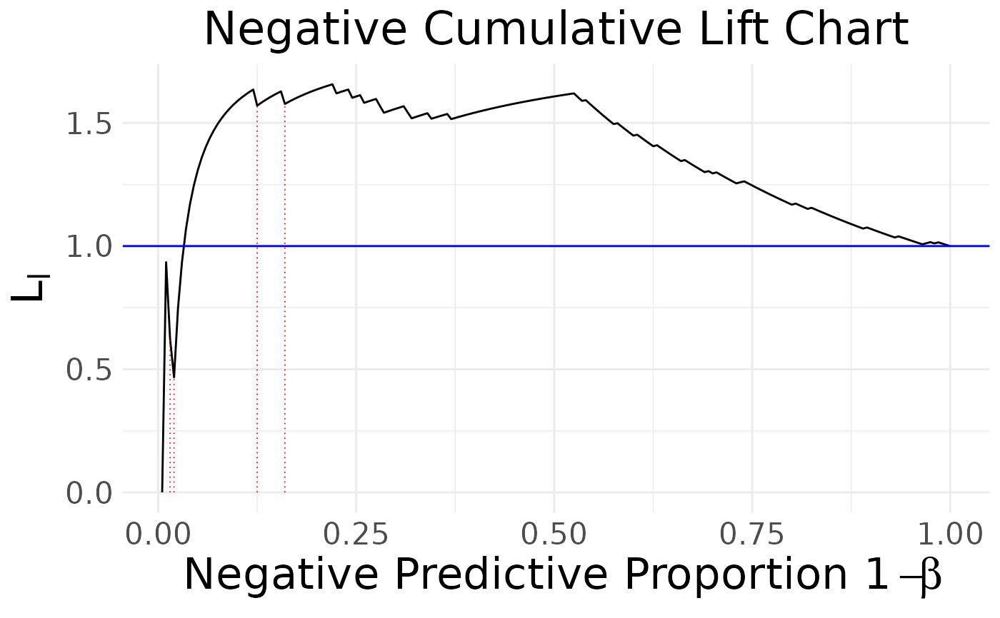
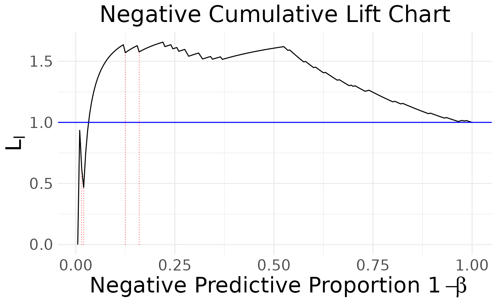

Show the existence and approximate locations of influential observations in binary classification through modified cumulative lift charts.
ICLC(score, binary, prop = 0.2)A vector containing the predictions (continuous scores) assigned by classifiers; Must be numeric.
A vector containing the true class labels 1: positive and 0: negative. Must have the same dimensions as 'score.'
A numeric value determining the proportion; Must lie between 0 and 1; Defaults to 0.2.
A list of ggplot2 objects
There are two types of influential cases in binary classification:
positive cases with relatively lower scores - negative cumulative lift chart (NCLC)
negative cases with relatively higher scores - positive cumulative lift chart (PCLC)
Each cumulative lift chart (PCLC or NCLC) identifies one type of influential observations and mark with red dotted lines. Based on the characteristics of two types of influential cases, identifying them require to search the highest and lowest proportions of 'score.'
Graphical approaches only reveal the existence and approximate locations of influential observations; it would be better to include some quantities to measure their impacts
to the interested parameter. To fully investigate the potential observation in binary classification, we suggest end-users to apply two quantification
methods IAUC and LAUC as well. For a complete discussion of these functions, please see the reference.
Ke, B. S., Chiang, A. J., & Chang, Y. C. I. (2018). Influence Analysis for the Area Under the Receiver Operating Characteristic Curve. Journal of biopharmaceutical statistics, 28(4), 722-734.
library(ROCR)
data("ROCR.simple")
output <- ICLC(ROCR.simple$predictions,ROCR.simple$labels)
plot(output)


# Customize a text size for NCLC
library(ggplot2)
output$NCLC + theme(text = element_text(size = 20))

data(mtcars)
glmfit <- glm(vs ~ wt + disp, family = binomial, data = mtcars)
prob <- as.vector(predict(glmfit, newdata = mtcars, type = "response"))
plot(ICLC(prob, mtcars$vs, 0.5))

